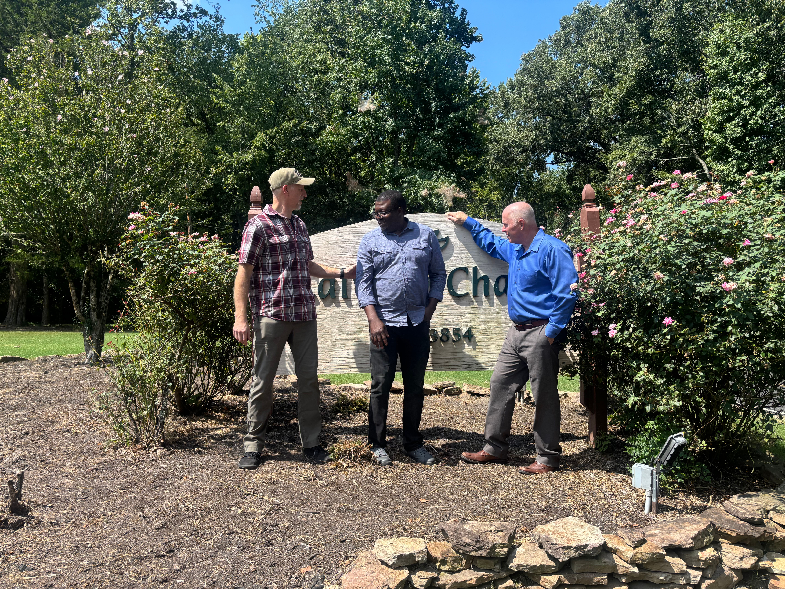

Ostep Is Not an Illegal Immigrant or Undocumented
Ostep came to the United States through a legal immigration process.
He has participated in the immigration process through the appropriate
legal channels and has made
every immigration court appearance required of him to date.
He is facing the immigration system—not avoiding it.
Ostep is seeking qualified legal representation to help him properly
present his case and pursue a path forward through the legal system.
What Led to Ostep's Current Situation
Ostep came to the United States in 2013
on a companion visa associated
with his wife's medical provider visa. During the course of their
marriage, a green card application was filed, but Ostep's name was
subsequently removed from that application.
Ostep was then able to change his immigration status to that of a student
and remained in the United States under that status while pursuing his
education. He went on to earn his Master's degree in Architecture from
the University of Memphis.
Now that Ostep has completed his education, his student status can no
longer provide the basis for him to remain in the United States
indefinitely. His current immigration circumstances therefore require
him to pursue another legal path through the immigration system.
This is where his situation has become particularly complicated.
Ostep has continued to comply with the immigration process and has made
every immigration court appearance required of him to date. He now needs
qualified legal representation to evaluate his circumstances and
properly present his case.
A Life Built in the United States
Ostep has spent many years building a life in the United States. During
that time, he pursued his education, developed professional skills,
became part of church communities, and built relationships with people
who have come to know and care about him.
Ostep earned his Master's degree in Architecture from the
University of Memphis. He has pursued opportunities to put that
education into practice, including architecture internships, and has
continued working toward a career in his field despite the obstacles
created by his immigration circumstances.
His involvement within the Calvary Chapel fellowship has also been an
important part of his life. He has served wherever there was a need,
including fellowship, worship, greeting, cleaning, setup and takedown,
conferences, and special events.

Ostep with Pastor John Pillivant and David.
Ostep's goal is to use the education, experience, and skills he has
developed during his years in the United States to build a career in
architecture and give back to the country that has been his home
for so long.
Following the Law While Seeking a Path Forward
Ostep's loss of work authorization has made it legally impossible for him
to obtain employment in the United States. Despite having the education,
experience, and desire to work, he has chosen to abide by the law rather
than accept employment without authorization.
Ostep has continued pursuing legitimate opportunities in architecture,
including internships, and has actually completed an architecture
internship. However, the complexity of his immigration circumstances has
made it difficult to find an architecture firm able to help him advance
his career while his immigration situation remains unresolved.
Rather than work outside the legal system, Ostep has continued to pursue
a lawful path forward. He is seeking qualified legal representation to
help resolve his immigration circumstances so that he can ultimately
return to the workforce and put his education and experience to use.
Ostep wants to work. He has the education and experience to contribute.
He is choosing to follow the law while he works toward obtaining a
legal path to employment.
When Protections Intended to Help Victims Become an Obstacle to Them Instead
Ostep's circumstances have also created an unusual situation involving
Marsy's Law and protections intended to safeguard victims of
abuse.
Ostep maintains that he was himself a victim of abuse in circumstances
surrounding the breakdown of his marriage. However, because of
protections relating to victims and the confidentiality of certain
records, he has encountered difficulty obtaining evidence that he
believes may be relevant to his own defense.
This has created a particularly difficult situation: protections intended
FOR him, in this circumstance, have become an obstacle to him in seeking
to obtain evidence crucial to his legal defense.
We are not attempting to make legal determinations through this website.
Those questions belong with Ostep's attorney and the appropriate legal
authorities. We are sharing this circumstance because it helps explain
why his case is complicated and why qualified legal representation is so
important.
His attorney can determine what evidence is relevant, what information
can legally be obtained, and how that information may be presented
through the appropriate legal process.
Why Legal Representation Matters
Ostep's immigration circumstances are complicated and require qualified
legal counsel. He needs an attorney who can review the circumstances of
his case, evaluate the evidence available to him, and present his
position through the appropriate legal process.
His upcoming immigration court hearing on
November 30, 2026 makes obtaining representation
particularly important. Ostep should not have to navigate a complicated
immigration matter of this significance on his own.
His attorney has advised that
$13,000 must be placed in escrow before she can begin his initial
legal defense. The overall fundraising goal is
$15,000, with the additional funds intended to help with
further legal and case-related expenses as his matter progresses.
The purpose of this fundraiser is straightforward: to give Ostep access
to the legal representation he needs to properly present his case.
Why We Are Asking for Help
Ostep has worked hard to build a life in the United States. He has
pursued his education, served within the Calvary Chapel fellowship,
developed experience in architecture, and continued to follow the law
while seeking a way forward through the immigration system.
Today, he faces an immigration court hearing on
November 30, 2026 and needs qualified legal
representation to properly present his case.
His attorney has advised that
$13,000 must be placed in escrow before she can begin his initial
legal defense. Our overall fundraising goal is
$15,000, with any funds beyond the initial legal-defense
requirement helping with additional legal and case-related expenses as
his matter progresses.
We are asking friends, churches, and members of the community to come
alongside Ostep and help give him the opportunity to have his case
properly represented.
This fundraiser isn't about asking people to solve Ostep's immigration
case. It's about helping make sure he has qualified legal representation
as he faces it.
How You Can Help
There are several meaningful ways you can stand with Ostep during this
difficult time. You don't have to be able to make a large donation to
make a difference.
Donate
Help us reach the $15,000 fundraising goal and provide Ostep with the
legal representation he needs.
Donate on GiveSendGo →
Share
Share Ostep's story with your friends, family, church, Bible study,
and community. One person sharing this campaign could connect Ostep
with someone who can help.
Pray
Pray for Ostep, his attorney, his upcoming court proceedings, and a
positive resolution to his situation.
Connect
If you are connected with a church, ministry, organization, attorney,
or other resource that may be able to help, please contact David.
Contact David
For Churches & Organizations
Would your church, ministry, or organization be willing to help Ostep?
There are several ways you can make a difference:
-
Share the fundraiser with your congregation.
-
Include the fundraiser in a church bulletin or newsletter.
-
Share it with a small group or Bible study.
-
Display or distribute the campaign flyer and QR code.
-
Connect us with other churches, ministries, or organizations that may
be able to help.
We've prepared a printable flyer with Ostep's fundraiser information and
QR code. You can download it to print, distribute, or share digitally
with your church or organization.
Every introduction and every share helps us reach someone who may be able
to make a difference.
About This Campaign
This campaign was created by David Miller to help Ostep Wesley obtain
legal representation. The information presented on this website is based
on David's understanding of Ostep's circumstances and is intended to
explain why legal assistance is needed.
This website is not intended to provide legal advice or make legal
determinations concerning Ostep's case. Questions concerning the legal
aspects of his case should be directed to his attorney.

{kind=link}